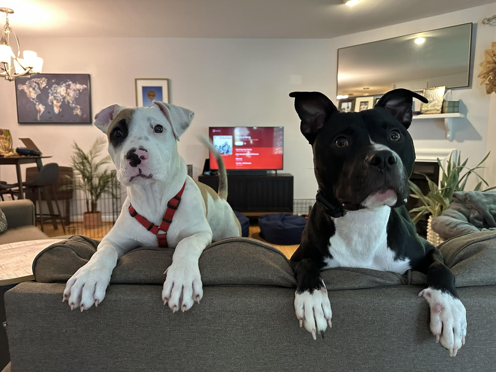
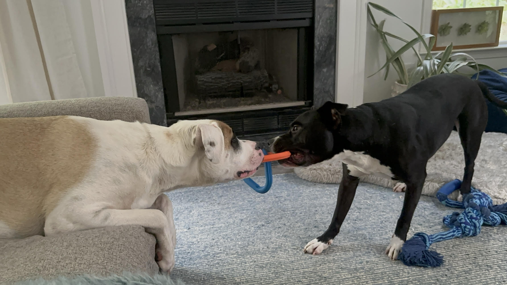

Jack
Jack met Cosmo when Jack was still a puppy, and they have been friends ever since.
How They Play
- They wrestle when both dogs are ready for rough play.
- They play tug together and take turns winning.
- They steal each other's bones whenever the chance appears.
- Cosmo suddenly notices toys he has ignored for months if Jack starts playing with them.
Photos

